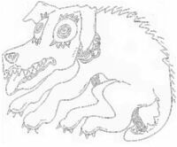

 Lé Tchian du Bouôlay 'tait supposé aver sa d'meuthe sus Les Huthets en d'ssus du Bouôlay à La Trinneté, mais ché n'tait pon qu'les Trinnetais tch'en avaient eune mortelle peux. Ch'tait un grand nièr tchian atout des ièrs comme des souôtasses, et i' siéthait les gens la niet - autchun bord dans l'Île! I' 'tait même supposé v'nîn jusqu'à St. Ouën, y'avait des pèrsonnes tchi criyaient l'aver ouï ou veu ès Chînq Vèrges la niet. Y'en avait tchi disaient tch'il avait eune grand' chaîne lé tou du co tchi 'tait si longue qu'ou traînait dans la route driéthe li, mais j'n'ai janmais connu autcheune pèrsonne tchi l'ont veu. L's anciens criyaient ès r'vénants, tu sai, mais i' n'y'en a réellement pon, dé r'vénants!
Mais y'a tréjous ieu des farceurs et des malfaîteurs. Y'avait eune ancienne tch'avait héthité eune vielle maîson tch'était supposé aver un trésor muchi d'tchiquebord dans la machon'nie, mais ou n'avait janmais êprouvé à l'trouver. Ou n'avait autcheune ambition d'êt' riche, et 'tait satisfait d'aller à san jour et d'vivre trantchillement à san tout seu, mais oulle avait tant ouï pâler du Tchian du Bouôlay qu'oulle avait eune fichue peux d'touos les tchians. Eune séthée en s'n allantilyi siez des vaîthîns, ou s'înmaginnait qu'oulle avait veu chu mauvais tchian-là, et oulle en 'tait êpouvantée. Oulle dit à tout l'monde, et un mauvais sujet tch'avait un grand nièr tchian s'avîsit d'l'êffriter et d'êprouver à trouver l'trésor dans sa maîson.
Eune séthée qu'nou viyait pon la main d'vant sé, i' la vit sorti d'siez lyi pour aller vîlyi siez ses anmîns comme d'habitude et i' s'en fut siez lyi quand ou fut horte et amathit san tchian dans l'bel pour li faithe peux s'ou r'vénait quandi tch'il 'tait à fouoilli pour lé trésor dans la maîson. Dans les grandes âtres du temps pâssé, y'avait tchiquesfais des creux muchis dans l'machonnage où'est qué l's anciens gardaient lus sou, et i' c'menchit à haler les pièrres du côté d'l'âtre atout eune barre dé fé et eune bigorne pour tâchi d'trouver l'creux, pensant qué ch'tait p't-êt' là tch'i' trouv'thait l'trésor à la bouonnefemme.
Dévant tch'i' trouvisse autcheune chose, eune partie d'la cheunm'née lî tchit sus l'co et i' pèrdit connaissance et restit-là, dans l'aithe à côté d'l'âtre, couvèrt dé sie et d'pièrres! Quand la bouannefemme èrvînt siez-lyi, ou fît des cris abominnabl'yes en viyant l'tchian dans san bel! Ou criyait qué ch'tait L'Tchian du Bouôlay et n'entrit pon dans l'bel. Ou s'en allit couothant siez l'Chentnyi tchi d'meuthait pas bein liain d'là. Lé Chentnyi r'connut l'tchian, lî fît la fête et lé d'samathit et l'enm'nit auve lî dans la maîson. Lé tchian s'en fut tout drait à san maître et auve la lueu d'sa lantèrne lé Chentnyi l'appèrchut souos la pile dé pièrres. Il 'tait acouo sans connaissance, et i' lî vèrsit eune bouqu'tée dg'ieau sus la fache pour lé rêvilyi, et pis il allit l'porter en ville dans san hèrnais et l'mînt en prîson!
Lé trésor tch'il en eut fut siêx mais d'prîson ès travaux forchis, et les vaîthîns aidgîdrent à la bouannefemme à r'bâti sa cheunm'née, mais i' pathaît qu'ou n'pèrdit janmais sa crianche qué ch'tait L'Tchian du Bouôlay qu'oulle avait veu dans san bel!
George d'la Forge
(Auve un mio d'rédaction)

Lé Tchan du Bouôlé
Viyiz étout: